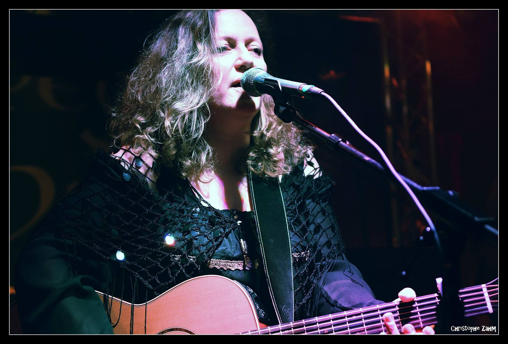
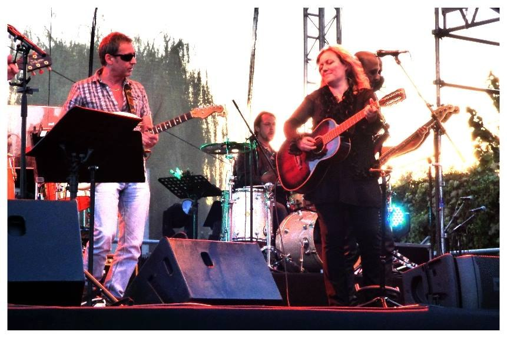

Conférence à la une · 2026
Français et anglais : deux langues, une même histoire
Deux langues, des siècles de rencontres. Un voyage accessible et surprenant dans leur histoire croisée.

Chanteuse, musicienne et coach : la voix est au cœur de mon parcours.
Franco-britannique, j’ai exploré le chant, le théâtre et la scène en France, en Irlande et en Angleterre. Formée à Dublin, à la Sorbonne Nouvelle et au coaching professionnel, j’accompagne aujourd’hui artistes et professionnels pour les aider à trouver leur voix — et leur place.
Si votre voix pouvait parler, que dirait-elle de vous ?
Une approche vivante et sur mesure pour affirmer sa présence, développer son éloquence et gagner en aisance — sur scène, devant un public ou dans la négociation.

Coaching individuel, interprétation, voix chantée et parlée, présence scénique.
Programmes sur mesure pour écoles d'ingénieurs, équipes et managers : prise de parole, pitch, storytelling, communication et négociation.
Des ateliers participatifs fondés sur l'expérimentation, le jeu et la mise en situation. Parmi eux, une série d'ateliers « Chanter en anglais » consacrée à la prononciation, au rythme et à l'interprétation du répertoire anglophone.
Deux extraits vidéo d'ateliers seront intégrés ici.
Démonstration et travail en atelier.
Un deuxième extrait à découvrir prochainement.
Chant, guitare, concerts et enregistrements. Un univers musical à écouter et à voir.


Compositions originales et projet musical autour du répertoire de Radiohead. Des créations et des concerts à suivre ici.
Des conférences vivantes, à la rencontre des langues, des idées et de l’art de communiquer.
Deux langues, des siècles de rencontres. Un voyage accessible et surprenant dans leur histoire croisée.
Voix, langage, communication et art de convaincre : de nouveaux sujets en préparation pour 2027.